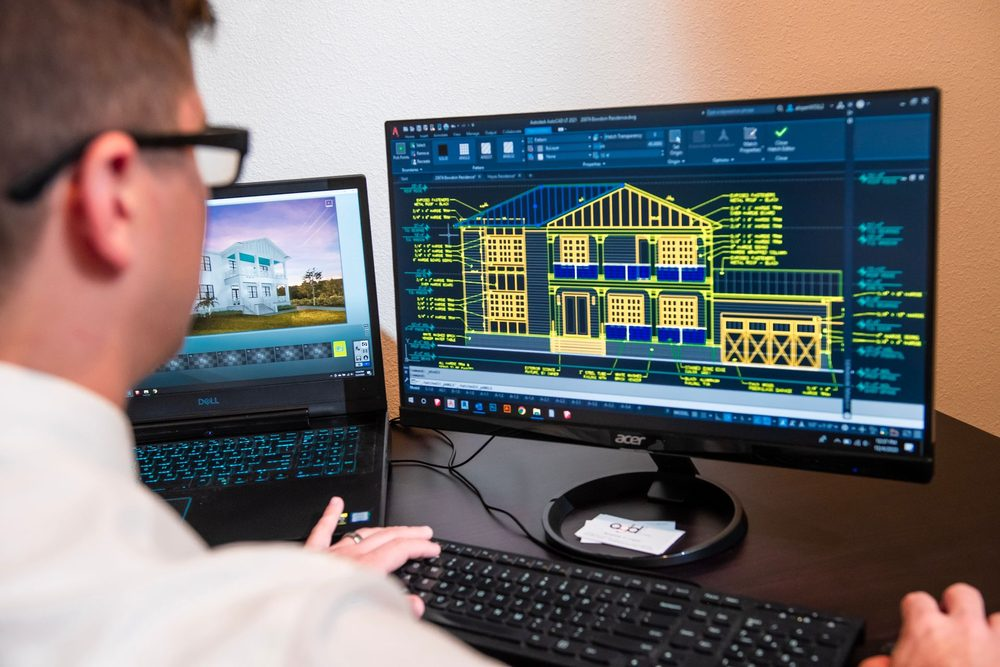
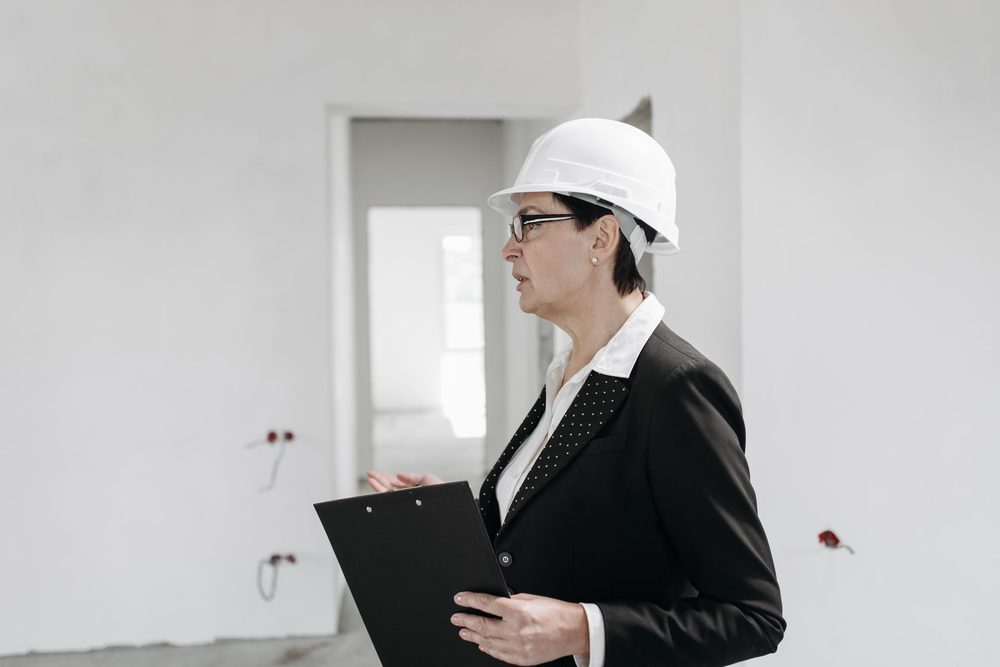

Trois acteurs, trois métiers différents sur un chantier
Dès qu'un projet de construction dépasse la simple rénovation, plusieurs intervenants techniques se succèdent ou se croisent : le bureau d'études (BET), le bureau de contrôle et le maître d'oeuvre (MOE). Ces trois noms reviennent régulièrement dans les devis, les permis de construire ou les contrats d'assurance, et il n'est pas rare que les maîtres d'ouvrage les confondent, voire imaginent qu'un seul professionnel peut assumer les trois rôles à la fois.
Ce n'est pas le cas. Chacun de ces métiers répond à une mission précise, encadrée par des textes différents, et surtout, chacun engage sa propre responsabilité sur un périmètre bien défini. Comprendre cette répartition permet d'éviter deux écueils fréquents : payer deux fois pour la même prestation, ou au contraire, laisser un maillon manquant dans la chaîne de conception et de vérification d'un projet.
Le bureau d'études structure : qui conçoit et calcule
Le bureau d'études techniques, souvent désigné par le sigle BET, est le professionnel qui conçoit techniquement l'ouvrage. Dans le domaine qui nous concerne, le BET structure dimensionne les éléments porteurs d'un bâtiment : fondations, poteaux, poutres, planchers, murs porteurs, charpente. Il traduit un projet architectural en un ensemble d'éléments capables de résister aux charges auxquelles ils seront soumis, dans le respect des Eurocodes (Eurocode 0 à Eurocode 8 selon les cas).
Concrètement, le BET structure produit des documents techniques : la note de calcul, qui justifie chaque élément dimensionné, ainsi que les plans de coffrage et d'armatures qui permettront à l'entreprise de construire l'ouvrage conformément aux calculs. Il peut aussi établir des attestations réglementaires liées à la structure, comme les attestations parasismiques AT1 et AT2 en zone sismique.
Le BET structure est missionné par le maître d'ouvrage directement, ou par l'intermédiaire de l'architecte ou du maître d'oeuvre. C'est un métier de conception : il ne réalise pas les travaux, et n'est pas une entreprise générale de construction. C'est dans cette catégorie que se situe MH Structure.
Le bureau de contrôle : qui vérifie la conformité technique
Le bureau de contrôle intervient à un tout autre niveau. C'est un organisme tiers, indépendant du concepteur et de l'entreprise, dont la mission est de vérifier que le projet respecte les règles de construction en vigueur : solidité des ouvrages, sécurité incendie, accessibilité, isolation, selon l'étendue de la mission confiée. Cette activité de contrôle technique de la construction est encadrée depuis la loi n° 78-12 du 4 janvier 1978, dite loi Spinetta, et codifiée aux articles L111-23 à L111-26 et R111-29 à R111-42 du Code de la construction et de l'habitation.
Point essentiel : le contrôle technique ne peut être exercé que par un organisme spécifiquement agréé par le ministère chargé de la construction. Cet agrément n'est pas une simple formalité, c'est une condition légale pour exercer cette activité. Les organismes les plus connus en France sont Apave, Socotec, Bureau Veritas, Qualiconsult ou Dekra.
MH Structure n'est pas un bureau de contrôle agréé. Nous sommes un bureau d'études techniques spécialisé en structure béton armé et métallique. Nos notes de calcul et nos plans de coffrage et d'armatures ne remplacent en aucun cas un rapport de contrôle technique réglementaire, qui ne peut être délivré que par un organisme agréé comme Apave, Socotec, Qualiconsult, Bureau Veritas ou Dekra. Lorsqu'un contrôle technique est requis sur votre projet, il doit être missionné séparément auprès de l'un de ces organismes.
Le bureau de contrôle rend son avis sous forme de rapports de vérification, qui pointent d'éventuelles non-conformités que le concepteur ou l'entreprise doivent lever. C'est un rôle de vérification et d'alerte, pas de conception : le bureau de contrôle ne dessine pas de plans et ne réalise pas de calculs de dimensionnement à la place du BET.

Le maître d'oeuvre : qui coordonne la conception et le chantier
Le maître d'oeuvre (MOE) est le professionnel qui coordonne l'ensemble des intervenants d'un projet, depuis la conception jusqu'à la réception des travaux. Il ne faut pas le confondre avec le maître d'ouvrage, qui est le client, le porteur du projet et de son financement. Le maître d'oeuvre agit pour le compte du maître d'ouvrage : il traduit ses besoins en projet architectural et technique, consulte les entreprises, coordonne les différents corps de métier et les bureaux d'études, suit le déroulement du chantier et vérifie que les travaux réalisés correspondent au projet validé.
Cette mission peut être assurée par un architecte, un économiste de la construction ou un bureau d'ingénierie généraliste, selon la nature et la taille du projet. Sur les marchés publics, la mission de maîtrise d'oeuvre est encadrée par la loi n° 85-704 du 12 juillet 1985, dite loi MOP, qui définit des éléments de mission types (esquisse, avant-projet, projet, direction de l'exécution des travaux, entre autres). Sur un projet privé, le contenu de la mission est librement défini par contrat entre le maître d'ouvrage et le maître d'oeuvre.
Sur le terrain, le maître d'oeuvre est l'interlocuteur qui fait le lien entre le BET structure, le bureau de contrôle lorsqu'il est mandaté, et les entreprises. C'est souvent lui qui centralise les remarques du bureau de contrôle et s'assure qu'elles sont bien intégrées aux plans avant exécution.
Tableau comparatif des trois métiers
Le tableau suivant résume les différences essentielles entre ces trois acteurs.
| Acteur | Mission principale | Base légale | Qui le missionne |
|---|---|---|---|
| Bureau d'études (BET) structure | Conçoit et dimensionne l'ouvrage : notes de calcul, plans de coffrage et d'armatures | Eurocodes (EN 1990 à EN 1998), aucune procédure d'agrément spécifique | Maître d'ouvrage, architecte ou maître d'oeuvre |
| Bureau de contrôle | Vérifie la conformité réglementaire de l'ouvrage : solidité, sécurité, accessibilité | Loi n° 78-12 du 4 janvier 1978, CCH articles L111-23 à L111-26 et R111-29 à R111-42 | Maître d'ouvrage, obligatoire dans certains cas listés à l'article R111-38 du CCH |
| Maître d'oeuvre (MOE) | Coordonne la conception, consulte les entreprises et suit le chantier | Loi n° 85-704 du 12 juillet 1985 (marchés publics) ; contrat privé sinon | Maître d'ouvrage |
Quand chacun est obligatoire
Aucun de ces trois acteurs n'est systématiquement obligatoire sur tous les projets. Leur intervention dépend de la nature, de la taille et de la destination du bâtiment.
- Le bureau d'études structure n'est pas imposé par un texte unique pour toute construction, mais il devient de fait incontournable dès que le projet nécessite un dimensionnement technique fiable : construction en zone sismique nécessitant une attestation parasismique, ouverture de mur porteur, surélévation, changement de destination. Il est aussi très souvent exigé par les assureurs dans le cadre de la garantie décennale.
- Le contrôle technique est rendu obligatoire par l'article R111-38 du Code de la construction et de l'habitation pour certaines catégories de bâtiments : établissements recevant du public de catégories 1 à 4, immeubles de grande hauteur, bâtiments dont la structure ou les caractéristiques du sol présentent des difficultés particulières, entre autres cas listés par le texte. Pour une maison individuelle courante, il n'est généralement pas imposé par la loi, mais peut être exigé par un assureur ou un établissement prêteur.
- Le maître d'oeuvre, ou à défaut un architecte, devient obligatoire pour le dépôt du permis de construire dès que la surface de plancher ou l'emprise au sol du projet dépasse le seuil fixé par l'article R431-2 du Code de l'urbanisme (150 m² pour les constructions à usage autre qu'agricole édifiées par des personnes physiques). En dessous de ce seuil, le maître d'ouvrage peut porter seul la coordination de son projet.
Le contrôle technique n'est pas une option de confort. Lorsqu'il est requis par la réglementation ou par votre assureur, il ne peut être remplacé ni par les documents du bureau d'études structure, ni par un avis informel de l'entreprise. C'est un rapport distinct, établi par un organisme agréé, qui conditionne parfois la délivrance de l'assurance dommages-ouvrage.

Comment ces trois acteurs travaillent ensemble
Sur un projet type, la séquence se déroule généralement ainsi. Le maître d'ouvrage confie la conception architecturale et la coordination à un architecte ou un maître d'oeuvre. Celui-ci sollicite un bureau d'études structure pour dimensionner les éléments porteurs et produire les notes de calcul et les plans de coffrage et d'armatures. Si le projet entre dans le champ d'application du contrôle technique obligatoire, ou si l'assureur l'exige, un bureau de contrôle agréé est missionné en parallèle : il examine les documents produits par le BET, formule ses observations, et suit leur bonne prise en compte jusqu'à la levée des réserves.
Chaque acteur reste responsable de son propre périmètre. Le BET structure répond de la justesse de ses calculs et de la conformité de ses plans aux règles de l'art et aux Eurocodes. Le bureau de contrôle répond de la qualité de sa mission de vérification, dans les limites de la mission qui lui a été confiée. Le maître d'oeuvre répond de la bonne coordination générale du projet et du respect du programme fixé par le maître d'ouvrage. Cette séparation des rôles, loin d'être une complexité inutile, est précisément ce qui permet à chacun d'apporter un regard indépendant sur l'ouvrage.
MH Structure intervient dans ce schéma en tant que bureau d'études structure : nous produisons les notes de calcul, les plans de coffrage et d'armatures, les diagnostics structurels et, lorsque votre projet le nécessite en zone sismique, les attestations parasismiques AT1 et AT2. Nous travaillons en lien direct avec votre architecte, votre maître d'oeuvre ou, le cas échéant, le bureau de contrôle missionné sur votre projet, pour que nos documents techniques répondent à leurs observations sans retard sur le chantier.
Un projet à structurer, avec ou sans maître d'oeuvre déjà identifié ? MH Structure prend en charge la conception structurelle de votre projet et se coordonne directement avec les autres intervenants, architecte, maître d'oeuvre ou bureau de contrôle. Devis gratuit sous 48h.
Questions fréquentes
Un bureau d'études structure et un bureau de contrôle, est-ce le même métier ?
Non, ce sont deux métiers distincts et complémentaires. Le bureau d'études structure conçoit et dimensionne l'ouvrage : il produit les notes de calcul et les plans de coffrage et d'armatures. Le bureau de contrôle, agréé par le ministère chargé de la construction, intervient ensuite comme tiers indépendant pour vérifier la conformité du projet aux règles de construction en vigueur.
MH Structure est-il un bureau de contrôle agréé ?
Non. MH Structure est un bureau d'études techniques spécialisé en structure béton armé et métallique. Nous concevons et dimensionnons les ouvrages, mais nous ne délivrons pas de rapport de contrôle technique réglementaire au sens du Code de la construction et de l'habitation. Cette mission relève d'organismes agréés comme Apave, Socotec, Qualiconsult, Bureau Veritas ou Dekra.
Le contrôle technique est-il obligatoire pour une maison individuelle ?
En règle générale, non. Le contrôle technique est rendu obligatoire par le Code de la construction et de l'habitation pour certaines catégories de bâtiments (établissements recevant du public de certaines catégories, immeubles de grande hauteur, bâtiments à structure complexe). Pour une maison individuelle courante, il n'est pas légalement imposé, mais certains assureurs ou banques peuvent le demander.
Ai-je besoin d'un maître d'oeuvre en plus du bureau d'études structure ?
Cela dépend de votre projet. Le maître d'oeuvre coordonne l'ensemble des intervenants et le déroulement du chantier, tandis que le bureau d'études structure se concentre sur le dimensionnement technique de l'ouvrage. Sur un projet simple, le maître d'ouvrage peut coordonner lui-même les entreprises ; sur un projet complexe, un maître d'oeuvre ou un architecte facilite grandement la coordination avec le bureau d'études.